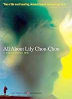

| |
Mo, 8. Oktober 2006
All About Lily Chou Chou (Jap 2001)

Shunji Iwai ist seit Jahren der wichtigste japanische Barometer der modernen japanischen Jugend, formal, stilistisch und inhaltlich. Lily Chou-Chou ist ein formal ausgefallener, moderner Film über die Freuden und Leiden der heutigen Jugendlichen in Japan. Alle Helden sind junge begeisterte Fans der fiktiven Pop-Sängerin Lily Chou-Chou, authentische Satzfetzen aus Internet Chats begleiten den Anfang, das Projekt begann eigentlich als interaktiver Web-Roman.
Shunji Iwai ist für mich der Wim Wenders Asiens. Seine Filme mäandern sich durch engagierte, zu breit angelegte Themen, oft pathetisch, großartig, verzaubernd und dann wieder realistisch. Nie will er bei seinem Erzählfaden bleiben, immer ausschweifender und melancholischer werden die divergierenden Handlungen, immer wieder unterbrochen durch realistische Geschichten. Allerdings verliefen die Karrieren der beiden gegenläufig. Während Wender's Filme seit Jahren immer irrelevanter und selbstbezüglicher werden, begann Iwai schlecht und ist erst seit seinem achtem Film, dem Hit "Swallowtail" und dann "Lily Chou Chou" am Höhepunkt seiner Karriere. Seitdem ist jeder Film besser als der vorherige.
"Erstaunlich, wie wenig All About Lily Chou-Chou zu tun scheint, was der Film, alles in allem, sehr virtuos tut: eine Geschichte erzählen. Die Bilder wirken wie Fundstücke aus den Leben, in die sie einen Einblick geben; die Komposition drängt sich (weiß Gott) nicht in den Vordergrund, tritt man aber ein Stück zurück, merkt man, wie sich alle Geschehnisse um ein Zentral- und wenige Nebenmotive gruppieren. Das Zentralmotiv ist das des tyrannischen Cliquendrucks unter Jugendlichen, der zu seelischer und auch körperlicher Bestialität führt. Als Nebenmotive bringt Iwai, auf den ersten Blick ganz genre-konform, erste, schwierige Lieben, gemeinsame Ausflüge und Schulprobleme ins Spiel. Weniger ein Motiv als der Hintergrund, vor dem der Rest in Szene gesetzt wird, ist die Titelfigur, die nie persönlich auftritt, um deren Musik aber ein nicht geringer Teil der Gespräche kreist: Lily Chou-Chou, eine (fiktive) Pop-Ikone.
Gespräche ist freilich irreführend: es sind kurze Sätze aus Internet-Chats, die Iwai als Buchstaben-Bilderbeat unter seinen Film legt, Sätze, die um den mysteriösen Äther kreisen, dem sich Lily Chou-Chous Genie verdanken soll. Kompletter Blödsinn also - und darin nicht nur realistisch, sondern, dank der Entstehungsgeschichte des Films sogar ganz authentisch. Begonnen hat Iwai das Projekt als interaktiver Web-Roman, der nach und nach und unter heftiger Mitwirkung der Besucher entstehen sollte; das Projekt wurde abgebrochen, aber viele der Chat-Zeilen sind direkte Inputs der Website-Bsesucher. Im Film werden sie nun zu Material, aus dem Iwai die zentrale Beziehung seiner Geschichte modelliert, die in Tyrannei umschlagende Freundschaft zwischen dem schüchternen Yuichi und dem vom Musterschüler zum brutalen Cliquen-Anführer sich entwickelnden Oshino.
Die Art der Umschläge ist typisch für den Film, das Schockerlebnis ist die fast nur symbolische Erklärung für die Veränderung. Der Film argumentiert nie psychologisch, das Verhalten der Figuren bleibt erratisch, oft schwer verständlich, ist nicht recht in eine vernünftige Kontinuität zu bringen. Redundanzen und Phasen, in denen buchstäblich nichts passiert (auch dem geduldigen Betrachter wird's da gelegentlich zu viel) stehen plötzliche Ein- und Ausbrüche von Gewalt und Tempo gegenüber - und seltsamerweise gibt gerade dieses Hin und Her dem Film einen klaren Rhythmus. Und was als blinder Pfad erscheinen mag, wird stets zurückgebunden an die wenigen wichtigen Motive des Films, der eher unerwartet noch auf einen letzten Höhe- und Schlusspunkt zusteuert und die beiden Hauptfiguren bei einem Konzert von Lily Chou-Chou ein letztes Mal aufeinandertreffen lässt." -- Ekkehard Knörrer, jump-cut
Iwai has established himself in Japan with such films as APRIL STORY, SWALLOWTAIL BUTTERFLY, and PICNIC, and is known for "cool" subject matter. Its obvious in seeing LILY CHOU-CHOU that he is a clear barometer of pop trends. The ecstatic compositions and ample palette of shockingly lush colors provide a unique, private, happy ending.
PRODUCTION NOTESDIRECTOR’S STATEMENT: FROM A MOVIE TO ANOTHER MOVIE
"It was just after I made Love Letter, that I began to receive film scripts from young aspiring writers. Now, if these were Mangas or cartoons, the common thing to do would be to approach publishers, but with screenplays, there are no particular roads you can take to become a professional, and perhaps that's why they end up at my doorstep from time to time. But since I'm a film director and not in the position to comment on other people's scripts, I decided to host a 'salon' with the help of my young producer friends, who would read the screenplays and give advice to the writers. The 'salon' was located on the internet at my website Yen Town Report, and before long, it became one of the most popular features on the site. All of those stray scripts, which had been wandering around aimlessly, had finally found a place to settle down. 'Scena-don't (Script Bowl)', as it is now called, still continues to receive hopeful scripts.
The producers who review the scripts are dubbed as 'the jury', and one of the most passionate and critical of them is Osamu Kubota. His harsh critiques make you forget that the writers are in fact amateurs. Kubota defends his attitude by calling it 'affection'. One day, I came up with the idea to play a prank on him to confirm how keen an eye he has. I sent him an old script that I hadn't shown to anyone. Kubota is of course used to reading my materials, but not without the knowledge that I had written it. It was going to be interesting to see how he would react.
The verdict was a devastating one. But his sharp criticism did accurately point out the weakness of my script. And affection? It was there, alright. This made me curious to see how my current writing as a professional would fare in the same arena. I decided to write a new script for this purpose, and this was how All About Lily Chou-Chou came about.
Last January, I went to Hong Kong to shoot a commercial, where I had the chance to go see Faye Wong perform. Without even realizing it, I was watching Faye through the eyes of a boy. This boy, the protagonist of the script I had begun to write, was not looking at Faye, but at Lily Chou-Chou, his charismatic diva. It was the moment All About Lily Chou-Chou began. As soon as I returned to Japan, I began writing the script. The story of a fanatic fan of an artist named Lily Chou-Chou. Shortly after, I completed the first draft of the novel. At the same time, I began developing the project as a feature film. We approached Takeshi Kobayashi who had worked with me on Swallowtail Butterfly to produce the music, and began looking for a female vocalist for the role of Lily. But the problem was the script. Something was missing. Something crucial. And I wasn't able to figure out what it was. After weeks of struggle, I finally made the decision to abandon the film project.
Takeshi Kobayashi was the one who was disappointed the most by the news. He had such faith in the project, that he wouldn't let it go. His almost persistent encouragement and passion gave me new strength, and I soon found myself toying with alternative ideas. To begin with, I decided to concentrate on finishing the story as a novel, rather than a screenplay. As an experiment, I concocted a website named Lily-holic and tried to imagine what kind of messages a Lily Chou-Chou fan would post to its BBS. Through their exchanges, they would try to solve the mystery of a murder that took place at Shibuya Quatre. The simulation worked so well that after that, the script just kept expanding. It wasn't long before I had enough to publish a book. I knew that I had found the missing piece. All I had to do then was to assimilate Lily-holic with All About Lily Chou-Chou. And the story was completed.
The process was totally unexpected, but this was how this innovative interactive novel was conceived. Since its debut on April 1st, All About Lily Chou-Chou has been endlessly multiplying, incorporating the messages posted by the users/readers into its original story. This was certainly a project that experienced quite a few twists and turns, even for me. It started as a script for a prank then became a novel, then an unfinished screenplay, and then an Internet novel. And now, I am finally seeing All About Lily Chou-Chou as a film.
This is the long story leading up to where All About Lily Chou-Chou
is now."
-- by Shunji Iwai, courtesy © Cowboy Booking International
"She's all-powerful, a voice for a pop-cyber culture that feeds on her Bjorkness." - Ed Gonzalez, Slant Magazine
"Bravura, ambitious and profoundly disturbing. It is also a daunting, demanding experience, one whose complex structure makes it a challenge to track despite literate subtitles." - Los Angeles Times
"Iwai creates Yuichi's world as much through disembodied moments of sight and sound as through action, building to a surprising stab of melancholy." - Lisa Schwarzbaum, Entertainment Weekly
"If your taste runs to 'difficult' films you absolutely can't miss it." - Andrew O'Hehir, Salon.com
"While this has the making of melodrama, the filmmaker cuts against this natural grain, producing a work that's more interested in asking questions than in answering them." - David Ehrenstein, New Times
Festivalpreise:
Berlin 2002 - CICAE Award
Shanghai 2002 - 2 Hauptpreise
Yokohama 2002 - Festival Prize
Lily Chou-Chou no subete, Jap 2001, B+R: Shunji Iwai, D: Hayato Ichihara, Shugo Oshinari.
146min, jap.meUT
19:30 Uhr, Space04 Kunsthaus Graz, € 5.-
- [Official Website]
- [imdb] 7.5/10 (1,124 votes)
- [rottentomatoes]
- [Jumpcut Kritik]